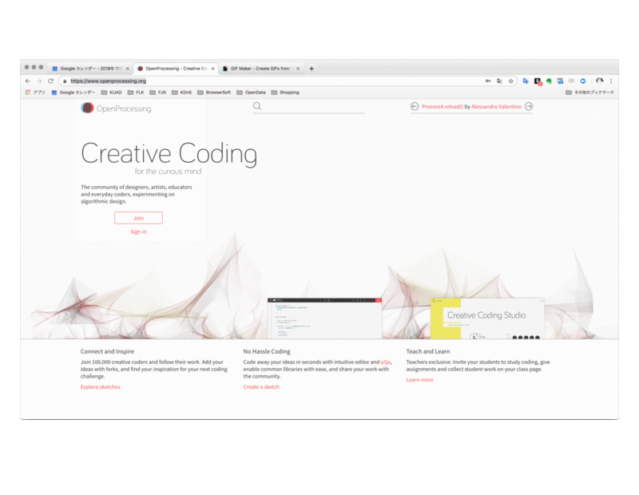
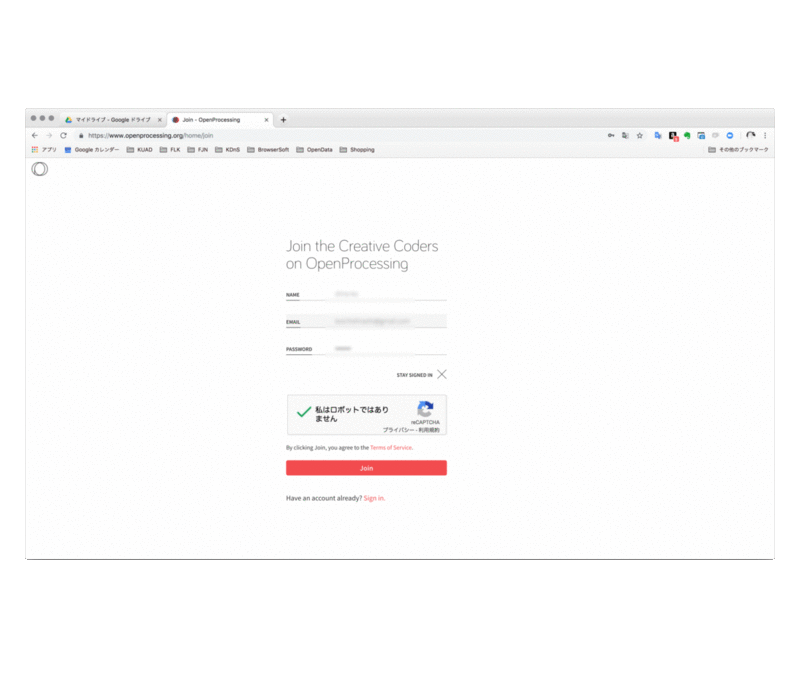
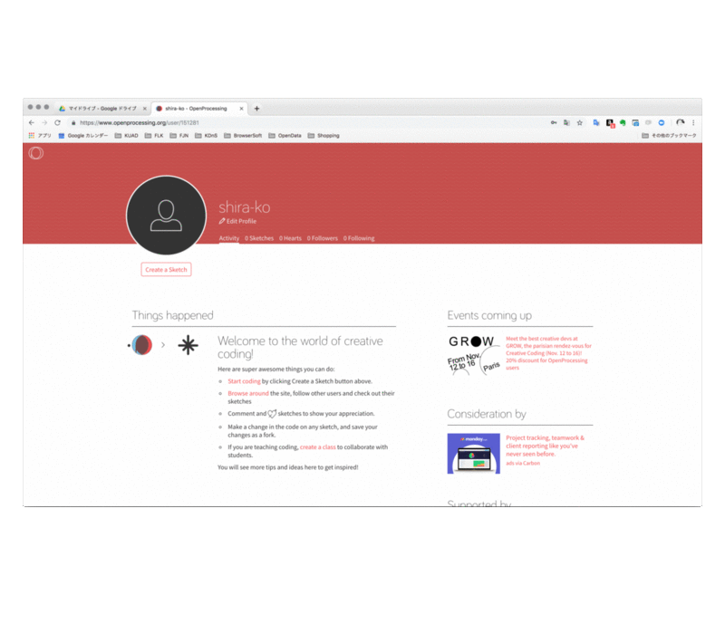
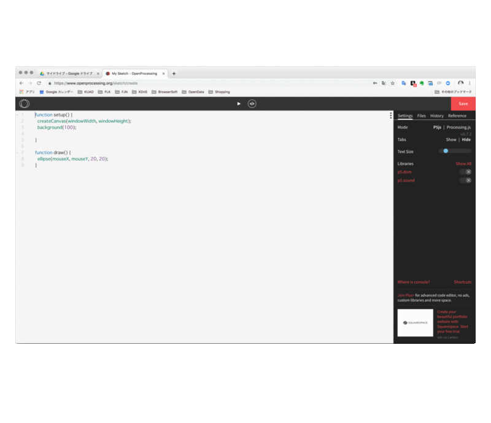
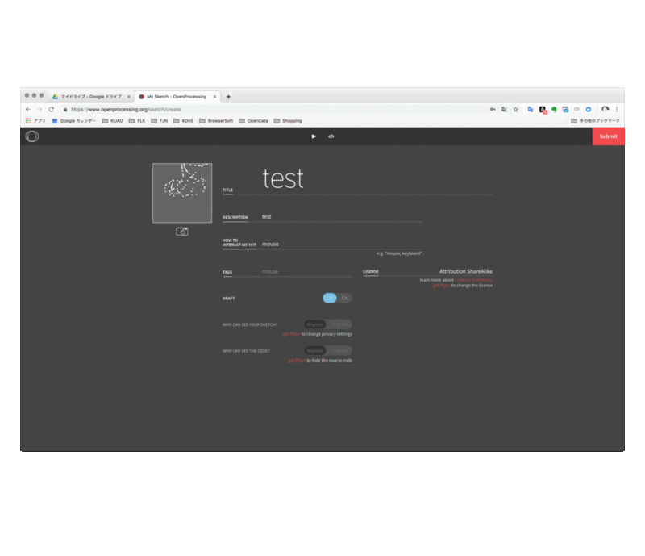

OpenProcessingのサインアップと投稿方法
openProcessingとは？
openProcessingは、
デザイナーやアーティスト、エデュケーター、日々トレーニングを続けるクリエイティブコーダーのための、
アルゴリズミックデザインの実験コミュニティです。
このコミュニティでできること
世界中の100000人を超えるコーダーたちと接続することが可能です。
彼らの作品をフォローしたり、フォークして自分のアイデアを追加して改変したり、
自分自身の次のコーディングチャレンジのひらめきを得ることができます。
explore sketches
この授業では、p5.jsのコードをこのプラットフォームを使って課題を提出してもらいます。
では早速、サインアップして使ってみましょう。
-
サイトアクセス
-
ジョイン

-
情報入力
-
アカウント作成
- 私はロボットではありませんをクリック
- joinをクリック
- これでサインアップは完了

-
アカウント作成

-
コーディング
- これはコーディング画面
- 上部のタスクバーのボタンでコーディング画面とプレヴュー画面を切り替え可能
- Saveで保存

-
保存
- 基本情報を入れる
- title: 作品のタイトル
- description: 作品説明
- howToInteractWithit: どのような相互関係性があるか？
- Tags: タグ（適切なものをつける）
- License: クリエイティブコモンズライセンスの選択（デフォルト）はattribution/shareAlike
- 公開設定の選択
- draft: 製作中かどうかの切り替えOFFで草案ONで完成
- whoCanSeeYourSketch?: 誰がプレビューを見れるか？anyoneにする
- whoCanSeeTheCode?: 誰がコードを見れるか？anyoneにする
- Submitで公開完了
